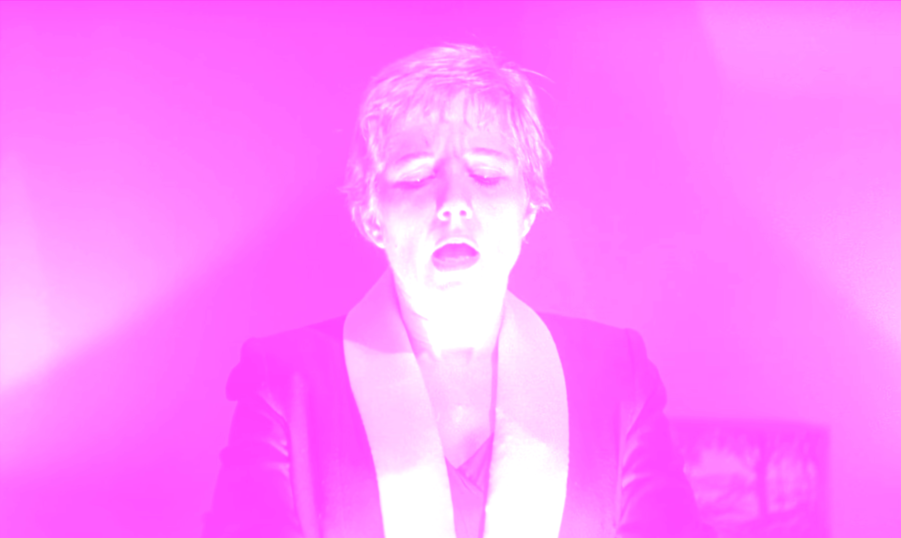
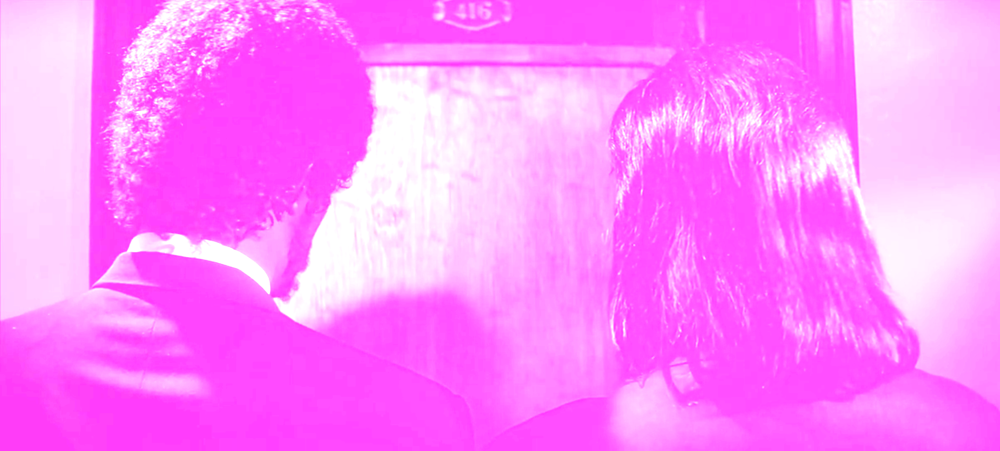
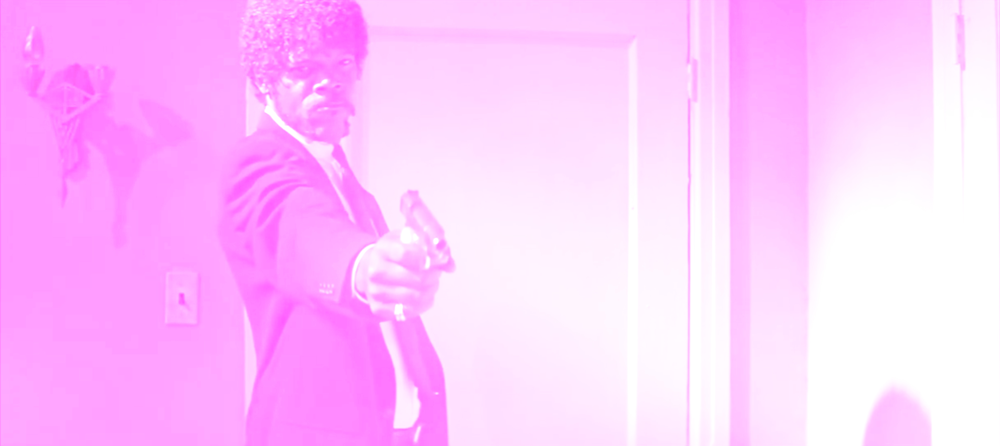
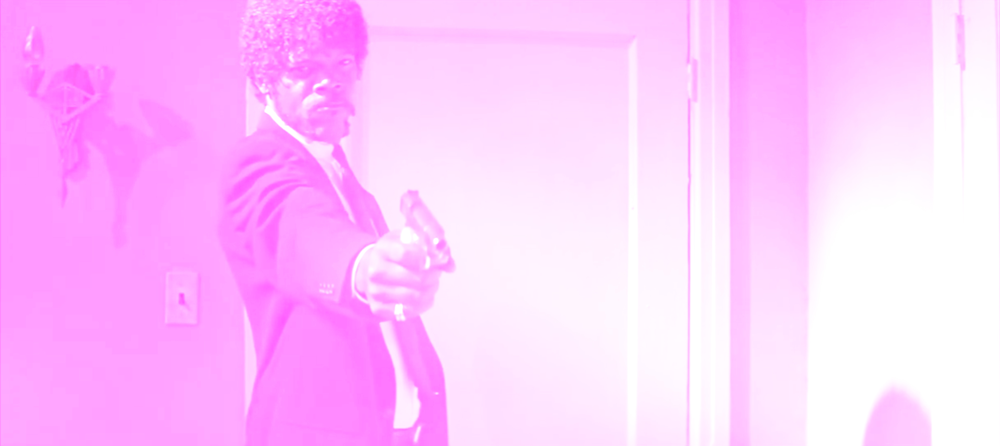
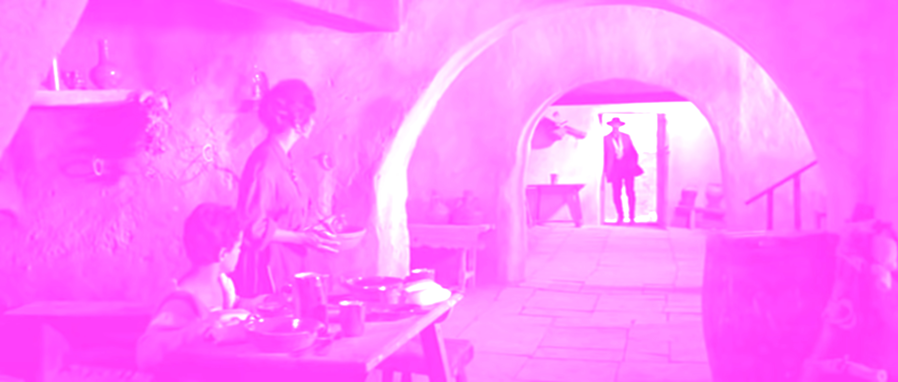
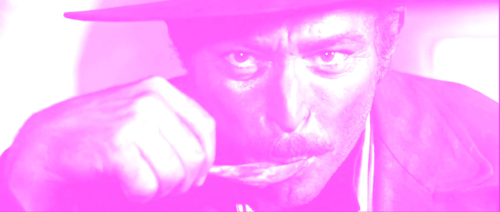
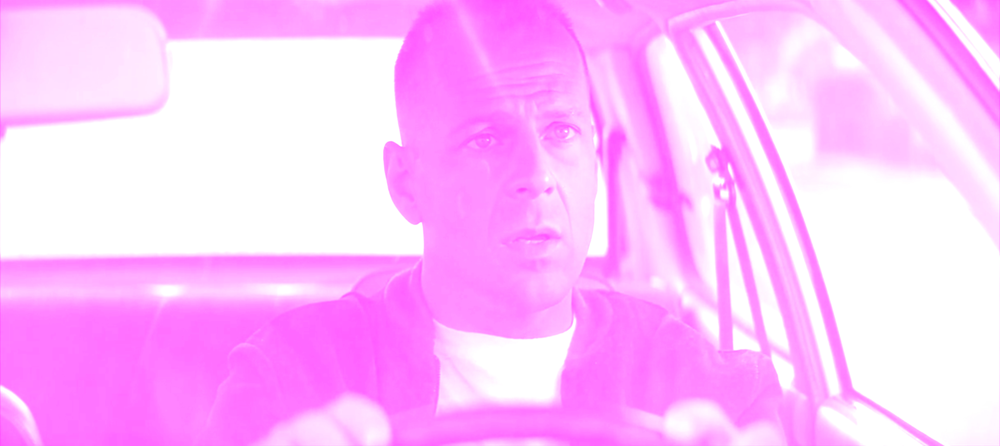
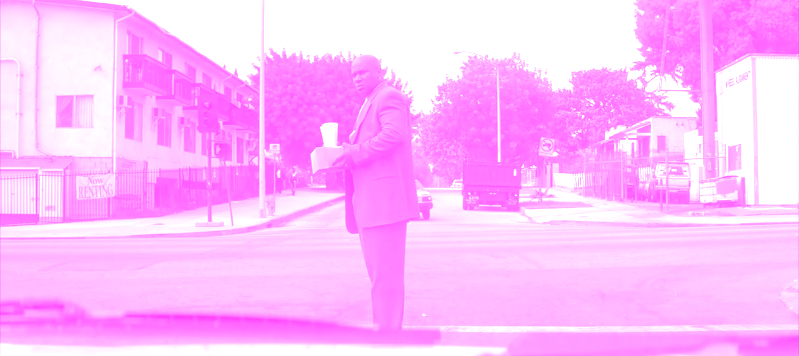
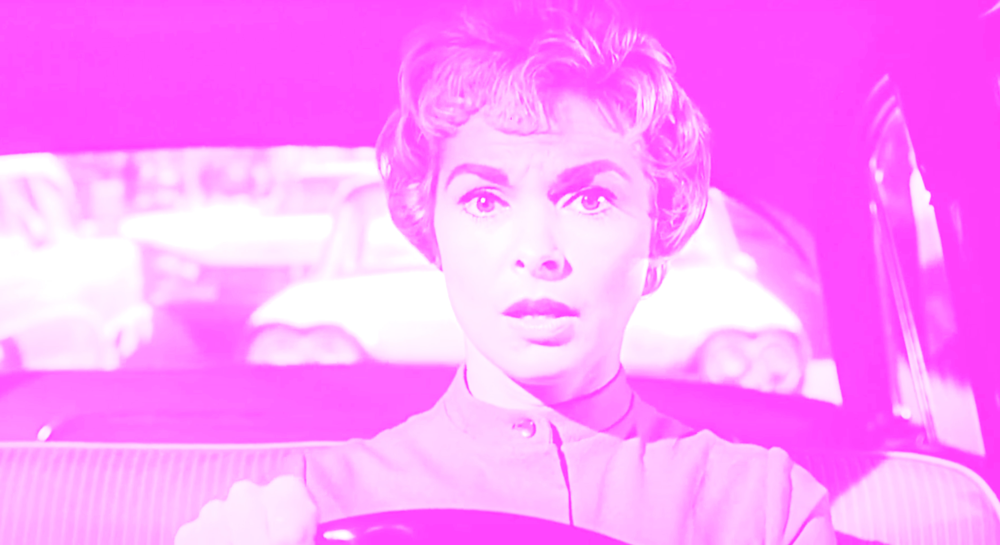
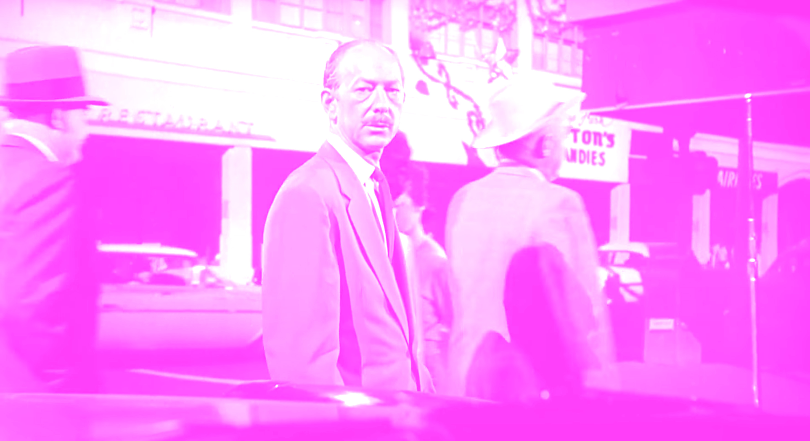

What makes the films of
Quentin
Tarantino
so special?
“I Steal”
From every single movie ever made. Quentin Tarantino
Tarantino might be the greatest, most unique postmodern pastiche artists ever. His pastiche works so well thanks to his undertanding of the subject he's stealing from.

mysterious briefcase that Jules and Vincent collect and bring to Marsellus Wallace. We never see what’s inside the briefcase, but anyone who opens it is illuminated by a golden glow as they stare inside it in awe. This is a reference to the mysterious box at 'Kiss Me Deadly' the classic 1955 film noir. Everyone has their own theory on what’s in the briefcase.
1979
1994
Walter Hill’s cult classic 'The Warriors' has provided inspiration for a number of modern genre filmmakers. Quentin Tarantino is clearly among them, as he imitates a couple of shots from The Warriors in Pulp Fiction: a closeup of a character’s lips as they speak into a microphone.

Jules and Vincent let themselves in and during the interrogation, Jules begins to eat Brad's food , "hmm, that is a tasty burger!" and later, shoots him dead.
, "hmm, that is a tasty burger!" and later, shoots him dead.
Angel eyes enters stevens's home uninvited. He begins interrogating him and during that eating Steven's food. After he gets the name he's looking for, he also shoots him dead.
The shot through Butch’s windshield of Marsellus Wallace crossing the street  and turning to face the driver is taken straight from Alfred Hitchcock’s Psycho. Marion Crane is embezzling $40,000 from her boss which just spotted herskipping town with the money.